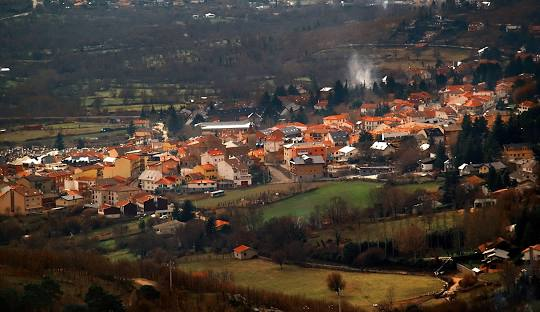
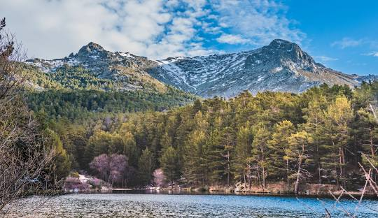
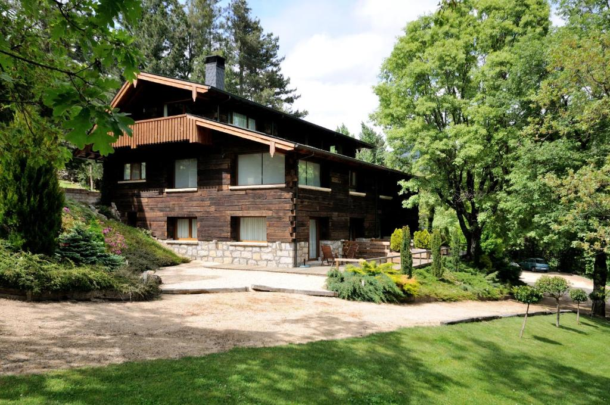
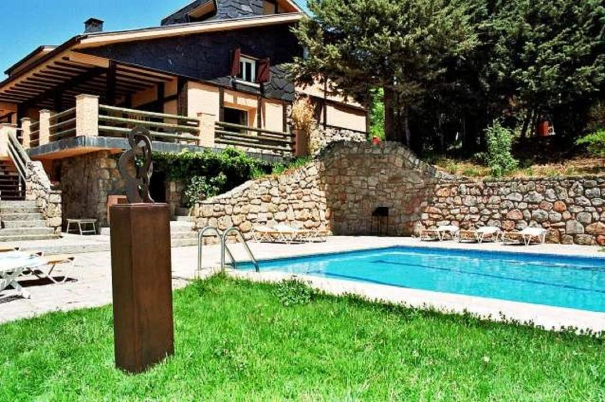
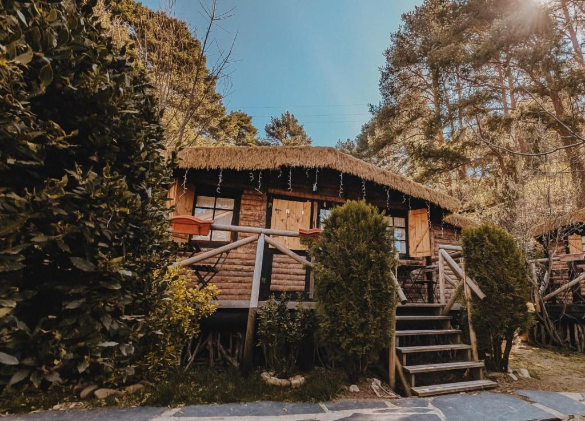
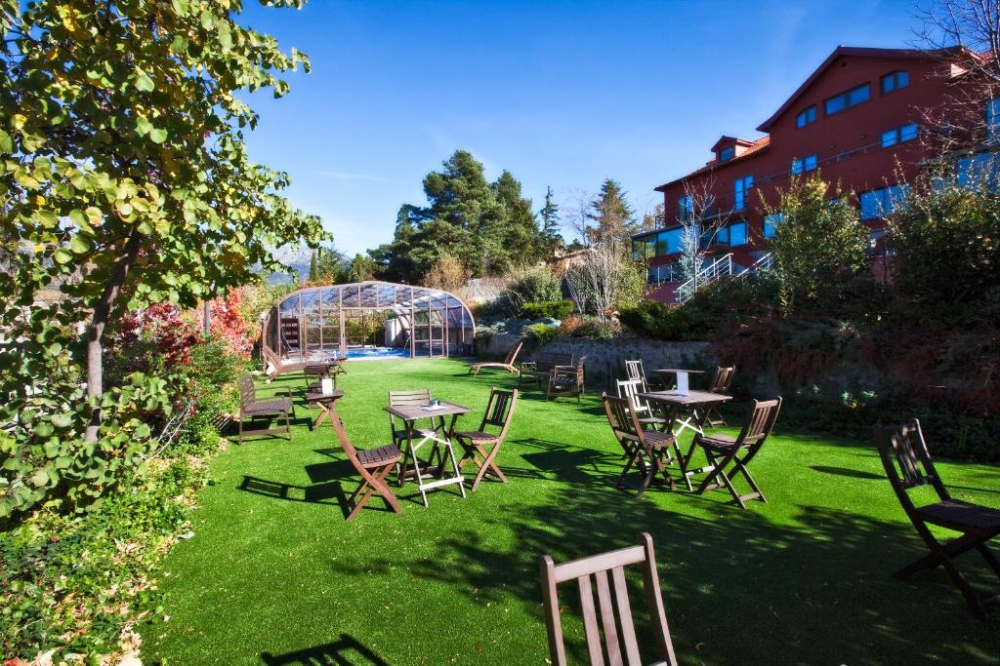

Pueblos de la Sierra

Cercedilla
Ideal para caminar bajo los pinos y visitar las Dehesas.

Guadarrama
Bueno para comer bien y pasear al aire libre.

San Lorenzo de El Escorial
Famoso por su gran monasterio e historia.
Zonas de Baño y Piscinas Naturales
Piscinas de Las Berceas
Báñate en pozas tratadas en pleno Valle de la Fuenfría, rodeadas de pinos.
Las Presillas (Rascafría)
Piscinas naturales en el río Lozoya con amplias praderas de césped y vistas directas al Pico Peñalara.
Pantano de San Juan
Situado en San Martín de Valdeiglesias. El único embalse de la región con baño autorizado y arena.
La Pedriza (Manzanares el Real)
Pozas de agua cristalina junto al río Manzanares.
Actividades
🌲 Cercedilla: Naturaleza y Aventura
- Piscinas de Las Berceas: Báñate en pozas tratadas en pleno Valle de la Fuenfría, rodeadas de pinos.
- Aventura Amazonia: Lánzate por tirolinas y cruza puentes colgantes en uno de los mayores parques de aventura en árboles de España.
- Rutas a caballo: Pasea guiado por los senderos de montaña con empresas locales como Hípica Cercedilla.
- Senderismo histórico: Camina por la Calzada Romana o haz la ruta de los Miradores de los Poetas.
- Tren de la Naturaleza: Sube en el histórico tren de vía estrecha que conecta Cercedilla con el Puerto de Cotos.
🍽️ Guadarrama: Gastronomía y Aire Libre
- Ruta del Embalse de La Jarosa: Camina por un sendero llano rodeado de pinos laricios con vistas espectaculares al agua.
- Turismo gastronómico: Saborea la auténtica carne con D.O. Sierra de Guadarrama en sus asadores tradicionales.
- Área recreativa El Berzalejo: Disfruta de un picnic a la sombra en sus encinares con zonas de juegos infantiles.
- Parque de El Hogar y Centro: Pasea por sus plazas principales y disfruta de terrazas veraniegas muy animadas al caer la tarde.
- Senderismo al Cabeza Líjar: Sube hasta su búnker de la Guerra Civil reconvertido en mirador con vistas de 360 grados.
🏛️ San Lorenzo de El Escorial: Historia y Cultura
- Monasterio de El Escorial: Visita el imponente palacio, la biblioteca real y los panteones de los Reyes de España.
- Jardines del Fraile: Pasea de forma gratuita por estos cuidados jardines con estanques a los pies del monasterio.
- Silla de Felipe II: Sube en coche o andando a este mirador de roca donde el rey vigilaba las obras del monasterio.
- Bosque de La Herrería: Camina bajo robles y castaños ancestrales en un entorno protegido ideal para el verano.
- Casitas del Príncipe e Infante: Explora estos pequeños palacetes neoclásicos rodeados de jardines franceses.
Alojamientos Recomendados en Cercedilla

Hotel Rural las Rozuelas
Tipo: Hotel de 5 estrellas
Teléfono: 918 522 006 / 629 829 288
Vistas al bosque, muy tranquilo, atención excelente.
- 🚗 Parking gratis
- 📶 WiFi gratis
- 🚭 Habitaciones sin humo
- 🚐 Traslado aeropuerto
- 👨👩👧👦 Habitaciones familiares
- ☕ Tetera/cafetera en todas las habitaciones
- 🥐 Desayuno fantástico

Casona de Navalmedio
Tipo: Hotel Rural con encanto
Teléfono: 918 521 351 / 628 904 713
Estilo rústico, cuenta con piscina de temporada propia y restaurante regional.
- 🏊♂️ Piscina interior li
- 🚗 Parking gratis
- 📶 WiFi gratis
- 🚭 Habitaciones sin humo
- 🚐 Traslado aeropuerto
- 👨👩👧👦 Habitaciones familiares
- ☕ Tetera/cafetera en todas las habitaciones
- 🥐 Desayuno fantástico

La Posada Cercedilla
Tipo: Complejo Rural
Teléfono: 629 602 522
Cabañas y casas de campo rodeadas de naturaleza, muy cerca de las rutas de senderismo.
- 🚗 Parking gratis
- 📶 WiFi gratis
- 🚭 Habitaciones sin humo
- 🚐 Traslado aeropuerto
- 👨👩👧👦 Habitaciones familiares
- ☕ Tetera/cafetera en todas las habitaciones
- 🥐 Desayuno fantástico

Hotel Luces del Poniente
Tipo: Hotel de 3 estrellas
Teléfono: 918 52 55 87
Hotel estilo boutique, a solo 10 minutos en coche de la estación de esquí del Puerto de Navacerrada. Cuenta con una piscina cubierta climatizada con chorros de hidromasaje (abierta en temporada) y un acogedor salón con chimenea, ideal para relajarse después de un día en la montaña.
- 🏊♂️ Piscina interior
- 💆♀️ Spa y centro de bienestar
- 📶 WiFi gratis
- ♿ Adaptado personas de movilidad reducida
- 🍽️ Restaurante
- 🚭 Habitaciones sin humo
- 🚐 Traslado aeropuerto
- ☕ Tetera/cafetera en todas las habitaciones
- 🍸 Bar
- 🥐 Desayuno fantástico